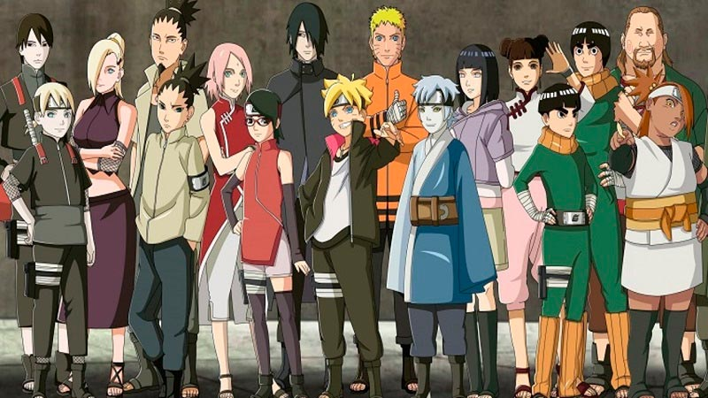
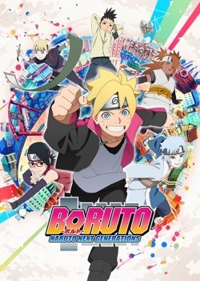
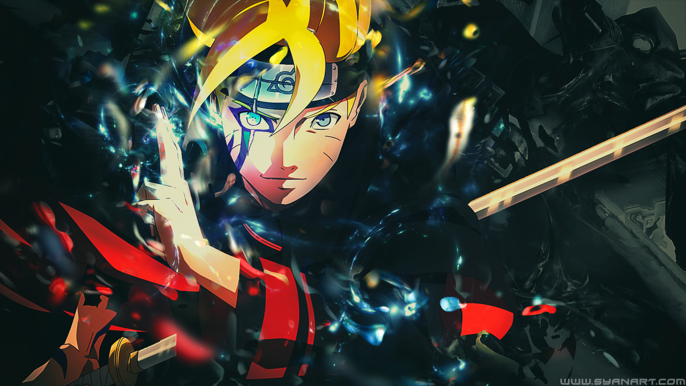

«Боруто» (яп. BORUTO - ナルト -) — манга Масаси Кисимото в жанре сёнэн. Главным её героем является Боруто Удзумаки, шумный и непоседливый ниндзя-подросток, сын Хокаге, мечтает о том, чтобы Отец признал его силу. Для это ему предстоит пройти через тысячи препятствий: экзамены ниндзя, различные миссии и сражения.
 Все персонажи очень хороши и большинство нам знакомы, так как Боруто это продолжение Наруто, мы видим что у всех есть предыстория и нам отчетливо показывают каждого персонажа. Так же показано что люди злыми не рождаются, просто жизненные трудности заставляют персонажей сходить с пути. У меня много любимых персонажей: Конохомару, Мицуке, Наруто, Саске, Гарра.
Главного персонажа зовут Боруто, смышлёный, целеустремленный ниндзя, никогда не сворачивает с своего пути.В манге показано как хорошо главный герой влияет на окружающих персонажей .
Больше всего конечно нравиться Саске, один из главных героев в предыдущем сериале, один из сильнейших ниндзя в мире, последний представитель клана Учиха ,лучший друг Хокаге и в то же время соперник. На данный момент занимается тем, что защищяет Коноху(свою деревню) от всякого вида угроз.
Из молодого поколения хотелось бы выделить Мицуке. это искусственно выведенный человек, который хочет научиться быть настоящим с помощью Боруто, он пытается учиться хорошему от главного героя.
Ну и конечно отец главного героя, Хокаге-Наруто Удзумаки. Главный герой аниме "Наруто" Сильнейший ниндзя в мире, человек который смог приручить Кураму(девятихвостого).
 Всем известная манга о Наруто подошла к своему логическому завершению и никто не ожидал, что все же будет продолжение. Наруто был одним из самых легендарных ниндзя, с воинственным огненным лисом в душе он сумел в итоге совладать и стал уважаемым хокаге в деревне. Но время не стоит на месте и даже в небольшую деревушку врываются современные технологии, мир начинает меняться.
На этот раз главным героем в истории будет не он, а его родной сын, который решил пойти по стопам отца и завоевать не только славу, но и уважение. Юный Боруто еще совсем молод, он унаследовал от отца абсолютно все его черты и силы. Не смотря его возраст, он готов к приключениям.
Как будут развиваться события в дальнейшем, можно узнать во время просмотра аниме и чтения манги.
 Понравилось разновидностью способностей, которые передаются в внутри клана или основанных на элементах стихий, улучшенных и расширенных геномов, людей с демонами в внутри (джинчурики) или обладателей энергией природы
Деревня развивается по мере своего времени, и тепрь не обязательно владеть какой-то техникой для того чтобы использовать её, учёные изобрели прибор который помогает носителю создавать техники.
В первом эпизоде было показано будущее, в котором будет какой-то новый вид техник, нам остаётся только наблюдать за тем, как главный герой развивается по мере возраста и наслаждаться.